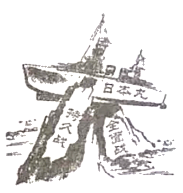

2020年北京市中考历史试题 · 选择题 第16、17、18、19、20题
16．1935年1月中共中央召开会议，会后中央红军在毛泽东为代表的中共中央领导下，四渡赤水，巧渡金沙江，跳出了敌人的重重包围，这次会议是中国共产党从幼年走向成熟的标志，此会议是（ ）
A．中共一大B．古田会议C．遵义会议D．中共七大
17．如图漫画《搁浅》（依原图改绘）创作于1941年，该漫画表达的是（ ）

A．九一八事变成为中国人民抗日战争的起点
B．淞沪会战打破日本三个月灭亡中国的迷梦
C．世界爱好和平与正义的国家和人民支持中国抗战
D．中华民族空前团结，英勇抗争必将取得抗战胜利
18．如图纪念章反映的历史事件（ ）
A．加速了人民解放战争在全国的胜利
B．推翻了官僚资本主义在中国的统治
C．大大提高了我国的国际地位
D．摧毁了我国的封建土地制度
19．深圳一直是我国对外开放的重要“窗口”，现在正向中国特色社会主义先行示范区迈进，深圳成为“窗口”的起点是指（ ）
A．实行民族区域自治
B．实行家庭联产承包责任制
C．成为首批经济特区
D．开启了城市经济体制改革
20．如表是某班制作的“云展板”的主要内容，其主题是（ ）
1970年4月，我国第一颗人造地球卫星﹣﹣东方红一号发射成功。 2003年10月，神舟五号载人飞船升入太空并成功返回地面。 2020年6月，我国北斗三号最后一颗组网卫星发射成功。 |
A．核能利用B．走向太空C．大国外交D．军队改革